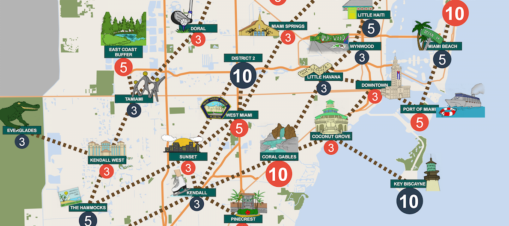

4 players in 2 teams (Blue and Red)
All players start from the same “start” place.
Each player can take four “actions” from the following list during their turn:
Move 1 spot = 1 action
Take your color’s vote = 1 action
Take a vacant opponent vote = 2 actions + answer correctly to a Swing a Vote question
Overturn a district (the district is already dominated by the other team) = 2 actions + Answer correctly to Overturn a District
Note: you must have at least 3 districts of your team to take this action
Draw a magic card = 4 actions. Caution: this may result in very good or very bad results.
After each turn, you must pick a Random card from the deck.
To swing a vote: Cost: 1 action + answer correctly to Swing a Vote Card
To overturn a district (Answer correctly to Overturn a District question + must have at least 3 districts won) To be able to do this, you must first land on it and roll two dice. The team you have challenged can roll three dice.
If you win, you take up the entire district and are then able to “turn” the color of that district into yours. If you lose, the opposing team will take your least valuable district.
You must win all of the district’s votes (number bubble on the board) to win that entire district. At this point, you may place a chip with your color on top of that bubble to show that you have dominated the district.
The game ends when the timeline reaches “voting day” which is when district values will be counted. The team with the highest number wins!